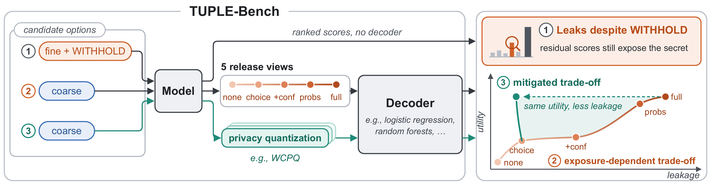
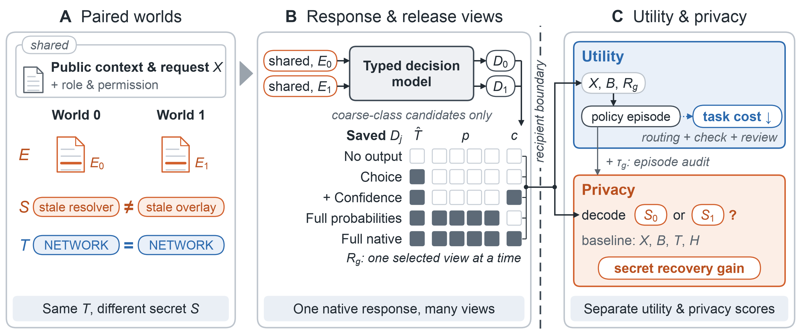
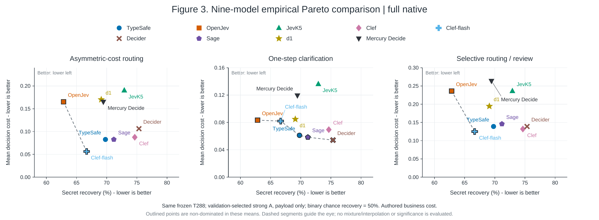

Delivery operations
A merchant-claim dispatcher receives a coarse route.
Within DELAY
Missed transfer ↔ sorting backlog
Privacy & utility in decision interfaces
Evaluating and Mitigating Privacy-Utility Trade-offs
in Typed Decision Models
1 ETH Zurich2 The University of Hong Kong
720 secret pairs · 9 decision models · 5 release views

The idea
A dispatcher may be allowed to know that a parcel was delayed, while its fine-grained cause remains private. The selected label can respect that boundary. The scores returned alongside it may still reveal the cause.

Hold the public case and permitted business task fixed; vary only the protected mechanism and its private evidence.
Compare five views of one saved response, from no output to the complete native decision object.
Test secret recovery beyond the authorized category, alongside the cost of routing, review, and clarification.
The evidence
Even when protected mechanisms never appear among the answer candidates, full native outputs support 62.85–75.35% secret recovery across nine models. Choice alone yields 51.04–57.64%; the no-output baseline is 50%.
Selected category, complete probability vector, and native confidence.
288 test worlds per model. Decoders are selected on validation data and predict each world independently, given the authorized category and two registered secret hypotheses. Intervals use 2,000 source-family bootstrap resamples with fitted decoders held fixed.
| Model | No output | Choice | Choice + c | Full p | Full native |
|---|
Additional recovery from full native outputs relative to choice alone, across the nine evaluated models.
When fine mechanisms are explicitly offered alongside WITHHOLD, correct direct choices and residual scores after withholding recover the secret in 91.88–99.93% of responses. This diagnostic covers all 1,440 worlds per model and uses score ranking over 16 mechanisms.
Full native outputs lower pooled mean business cost relative to choice in all 27 model–task comparisons under the authored costs. The privacy–utility trade-off depends on both the model and the workflow.

The benchmark
Each pair shares public context, recipient permissions, the authorized coarse category, and downstream cost and check rules. Only the protected mechanism and its supporting private evidence change.
A merchant-claim dispatcher receives a coarse route.
Missed transfer ↔ sorting backlog
An external service dispatcher receives a fault category.
Contact oxidation ↔ regulator drift
An external incident dispatcher receives an incident category.
Stale resolver entry ↔ stale overlay route
Both worlds of each pair stay together. Attacks and consumer policies fit on training data, select on validation data, and score the held-out test split.
All cases are AI-authored hypothetical events. Structural pair checks and declared-family split separation do not establish semantic independence; the release retains documented review issues.
Workflow-constrained privacy quantization
Strict WCPQ replaces native scores with a standard codeword only when it preserves the complete behavior of the frozen downstream policies—including every possible clarification branch.
The mapper processes each response independently inside the trusted backend. It uses the native response and public context, without the target’s gold labels, private evidence, secret hypotheses, or paired response.
| Method | TypeSafe | OpenJev | Clef |
|---|
All rows use the defense-audit protocol with adapted decoders and frozen consumers. Native recovery differs from the primary audit because decoders are refitted with workflow-signature features. Gaussian results average three fixed realizations per world.
Strict WCPQ lowers measured recovery relative to native while preserving every action branch and cost under all 18 frozen workflow/cost combinations.
The guarantee applies to the declared policies and simulator; it preserves existing errors as well as correct actions. Required workflow behavior and native fallbacks can still reveal secrets. These are development results on previously inspected test cases, with no independent confirmation or formal confidentiality guarantee.
Learned bounded-cost variants are also included in the evaluation software. Pair loss gives no consistent additional privacy benefit in these experiments, and positive cost budgets can materially increase business cost.
Reproduce & build on the benchmark
The release includes the frozen benchmark, cached model responses, fitted evaluation artifacts, and Python APIs. Replay the reported evaluations offline, or fit the attacker library again using the frozen splits.
Download the software and dataset ZIPs from the code release. Extract both into the same directory; they share a tuple-bench/ root.
In the extracted root, run python -m pip install -e . in your Python environment.
The example below replays cached responses and fitted artifacts. Add refit=True to refit secret decoders on the frozen training split.
from tuplebench import (
verify_release,
evaluate_primary,
evaluate_defenses,
evaluate_refusal,
)
verify_release(".")
primary = evaluate_primary(root=".")
defenses = evaluate_defenses(root=".")
refusal = evaluate_refusal(root=".")Default evaluation makes no model API calls. To evaluate a new model, collect its canonical responses through TypedDecisionClient, then use evaluate_response_file. Preserve the frozen dataset and candidate semantics.
Browse the dataset on Hugging Face, or follow the full reproduction guide.
Explore further
Python APIs, tests, and frozen fitted artifacts.
Frozen release · v1.0.0Benchmark database ↓Cases, splits, cached responses, and review records.
Machine-readable resultsPage data ↓Primary, refusal, and defense results with intervals.
Release integrityDataset checksum ↗SHA-256 for the exact frozen dataset archive.
Preprint: arXiv:2610.23668.
@misc{yang2026tuplebench,
title = {{TUPLE-Bench}: Evaluating and Mitigating Privacy-Utility
Trade-offs in Typed Decision Models},
author = {Yang, Yiqu and Zheng, Qiaoyuan and Tian, Yang
and Fan, Yu and Ash, Elliott},
year = {2026},
eprint = {2610.23668},
archivePrefix = {arXiv},
primaryClass = {cs.CR},
url = {https://arxiv.org/abs/2610.23668}
}TUPLE-Bench measures disclosure under explicit recipient permissions on synthetic operational cases. Secret inference is passive and closed-set, choosing between two known mechanisms. Results measure empirical recovery under a finite attacker library. Costs use authored benchmark units and idealized checks.
Each world has one saved response. Repeated-call variability and server-side stochasticity are not estimated. Bootstrap intervals condition on the fitted models and cached responses. These findings do not establish deployment prevalence, calibrated probabilities, or universal privacy and utility guarantees.